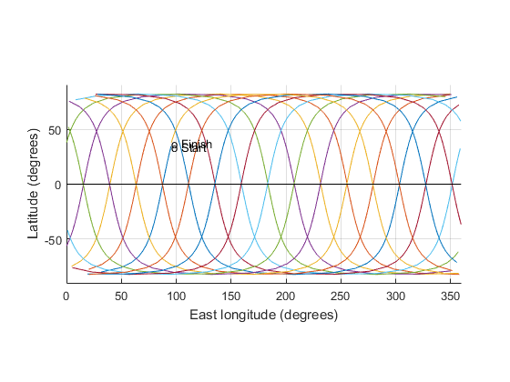

clear all; clc;
K=3;
N=45;
T=(K/N)*24*3600;
n0=2*pi/T;
we = 1.99106e-7;
mu=398600;
a=((T/2/pi)^2*mu)^(1/3);
R=6378.145;
J2=0.00108263;
i=acos(-2/3*(a/R)^2*we/(n0*J2));
tol=1;
counter=0;
counter=counter+1
for counter=1:1
odot=0.75*n0*J2*(R/a)^2*(5*cos(i)^2-1);
deln=-0.75*n0*J2*(R/a)^2*(3*sin(i)^2-2);
n=deln+n0+odot;
T=(2*pi/n);
a_new=((T/2/pi)^2*mu)^(1/3);
i=acos(-2/3*(a/R)^2*we/(n0*J2));
tol=abs(a_new-a);
a=a_new;
n0=n;
end
h=a-R
ground_track(h,i)
counter =
1
h =
572.7831
----------------------------------------------------
Angular momentum = 52636.9 km^2/s
Eccentricity = 0
Semimajor axis = 6950.93 km
Perigee radius = 6950.93 km
Apogee radius = 6950.93 km
Period = 1.60204 hours
Inclination = 97.6583 deg
Initial true anomaly = 100 deg
Time since perigee = 0.445011 hours
Initial RA = 270 deg
RA_dot = 0.0655982 deg/period
Initial wp = 45 deg
wp_dot = -0.224265 deg/period
r0 = [ -531.312, 5693.87, 3951.33] (km)
magnitude = 6950.93 km
v0 = [ 0.82666, 4.34349, -6.14781] (km)
magnitude = 7.57264 km
----------------------------------------------------
